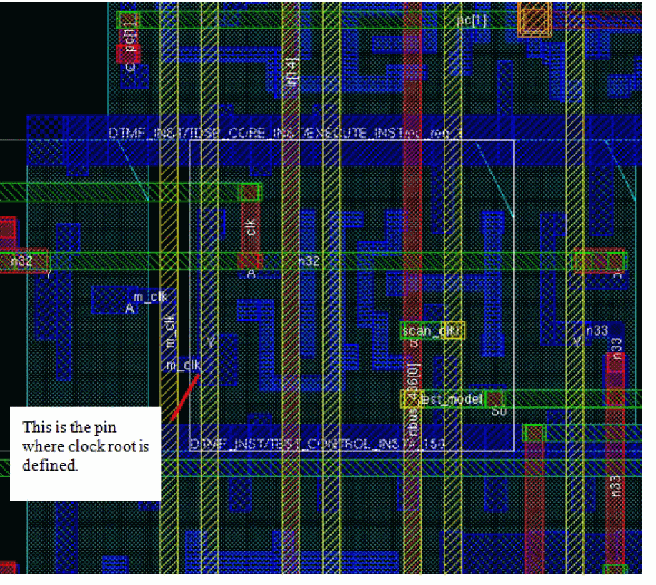
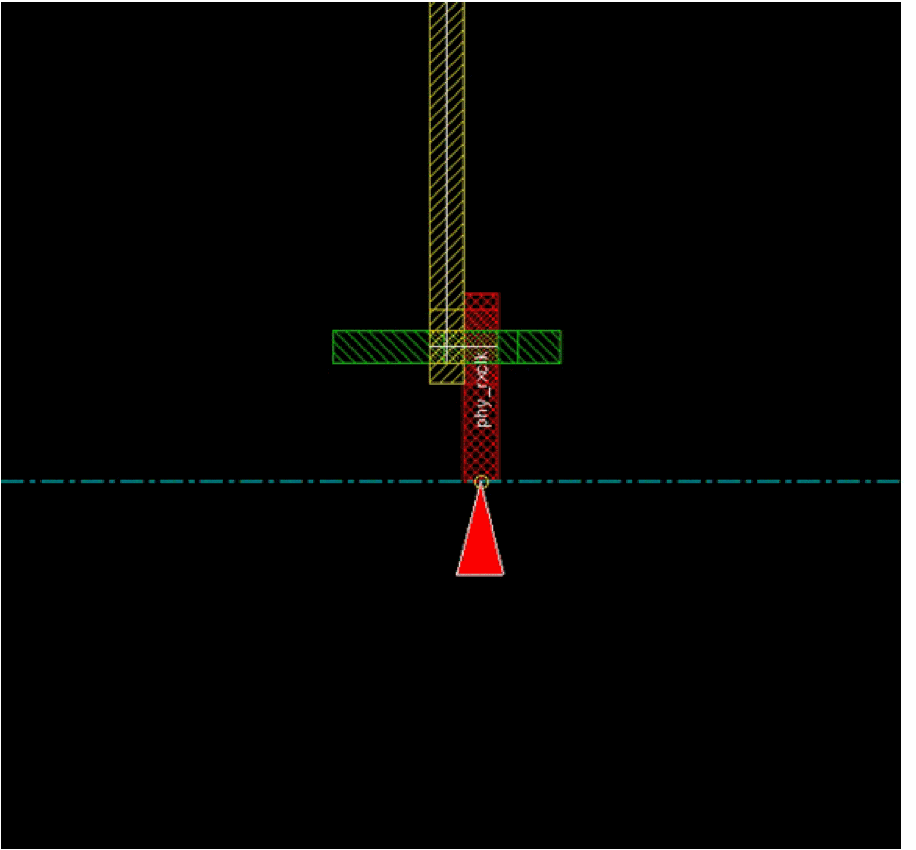
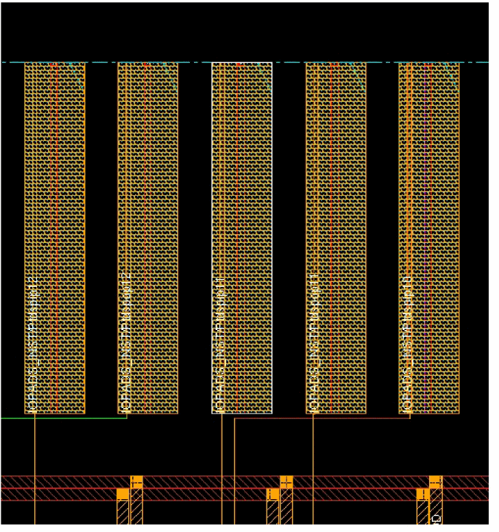

Cross-Probing of Clock Root in CTD
To cross-probe a clock root, select the clock root symbol in the display area of the CTD. Then select the View menu and check the Enable crossprobing option in the Select submenu. The layout window will zoom into the object in which that clock root is defined. The object of clock root could be a cell pin, an I/O port, or an I/O pad. If the clock root is a cell pin, layout window will zoom in the area of that pin and select that cell. This is shown in the figure below.

If the clock root is defined in an I/O port, the layout window will zoom to the area where the port is and select that port.

If the clock root is defined in an I/O pad, the layout window will zoom to the area where the pad is and select that pad.

Return to top